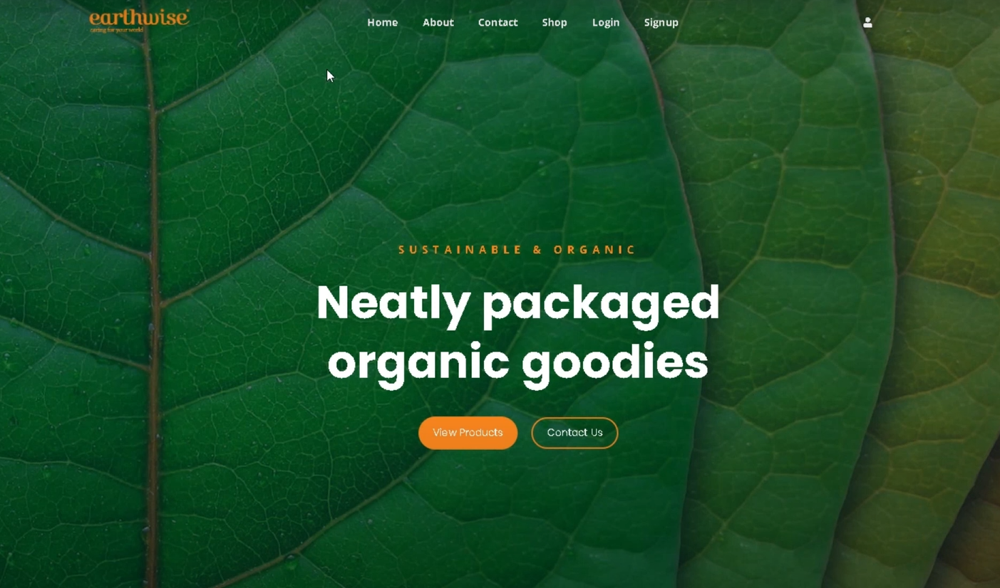

My Projects
UJCivil: Web & Mobile App for UJCIVIL Society Club
Designed and developed a full-stack web and mobile solution for the UJCIVIL Society Club using ASP.NET Web API and Xamarin.Forms. Hosted on Microsoft Azure, the platform enables members to access resources, manage events, and engage with club activities through a responsive and user-friendly interface.

FarmCare: BlockChain Application
Created a Java and JavaFX application called "Farm Care" that enables farmers to record and track the vaccination status of their farm animals. This project integrates blockchain technology to ensure secure and tamper-proof record-keeping for each animal's vaccination history.
